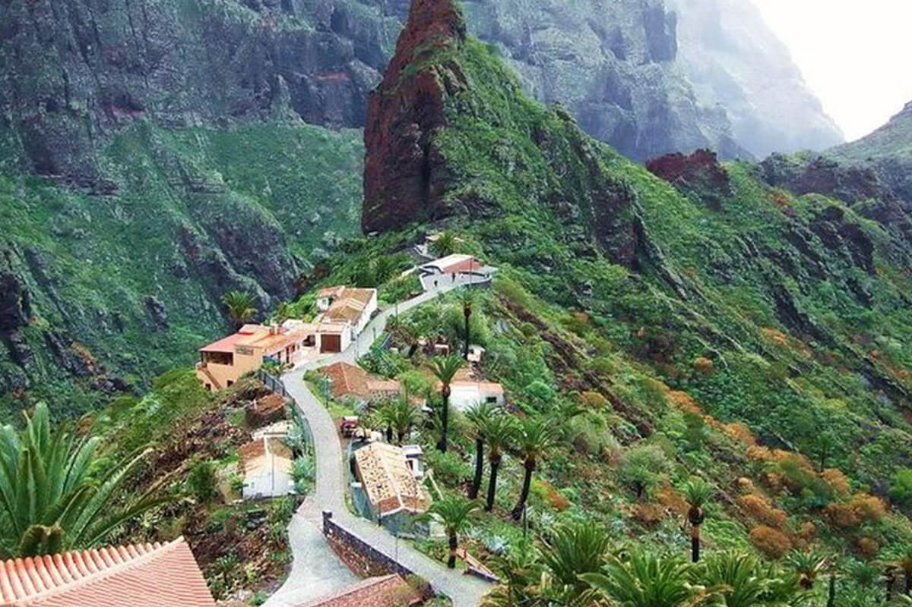
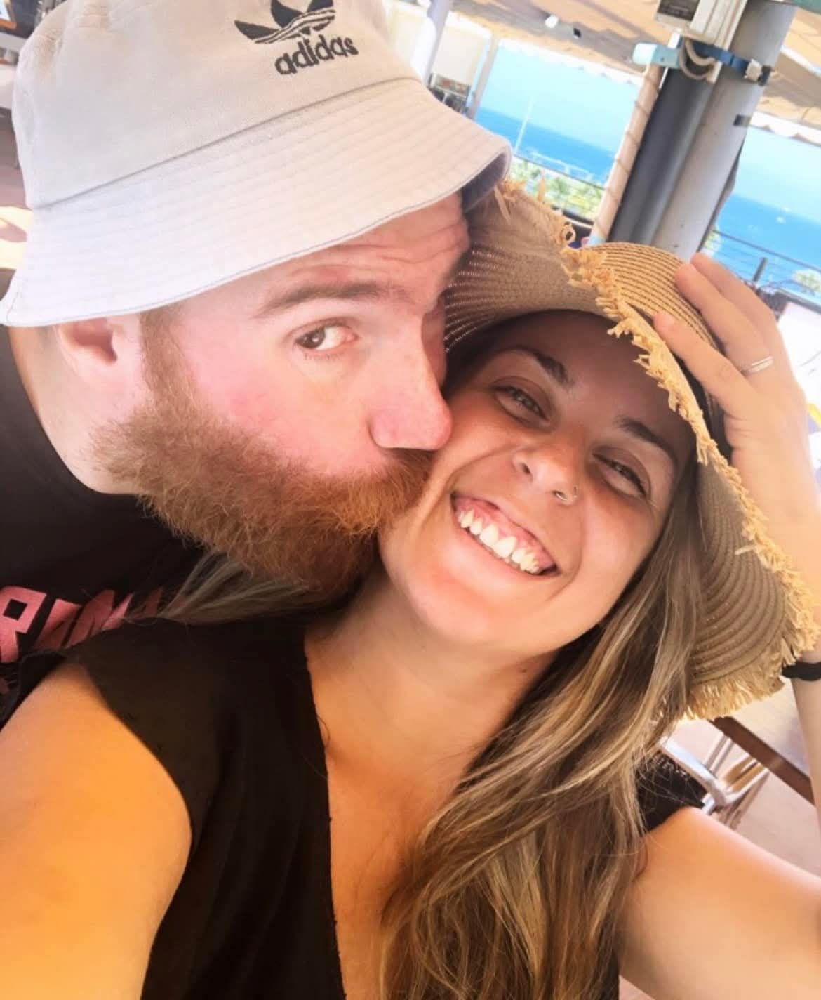

Isla
so easy so tenerife
Inizia la tua avventura con…
Tre passi, nessun pensiero
Dalla scelta dell'esperienza alla conferma: pochi minuti, dal telefono. Il catalogo lo sfogli anche senza connessione.
-
01
Scegli
Sfoglia escursioni e pacchetti selezionati.
-
02
Richiedi
Ci scrivi su WhatsApp con data e partecipanti.
-
03
Vivi
Confermiamo entro 24 ore e pensi solo a goderti la giornata.

Dove non arrivano i pullman
Cale di sabbia nera, piscine naturali e punti panoramici che i pullman turistici non raggiungono. Fanno parte di Tenerife tanto quanto le grandi attrazioni.

Isolani, per scelta
Isla nasce dalla voglia di rendere più semplice la vacanza a Tenerife: un unico posto dove trovare subito le informazioni della propria escursione, senza perdersi tra email, PDF e messaggi.
Il nostro obiettivo è uno solo: farti godere l'isola, senza pensieri organizzativi.
Domande frequenti
Come prenoto un'escursione?
Scegli l'esperienza dal catalogo e premi "Richiedi disponibilità": indichi data e numero di persone, e la richiesta ci arriva su WhatsApp. Verifichiamo i posti e ti confermiamo.
Quanto tempo prima devo richiedere?
Almeno 24 ore prima della data dell'escursione. Ti rispondiamo entro 24 ore con la conferma e i dettagli.
La richiesta è già una prenotazione?
No. La richiesta serve a verificare che ci sia posto: la prenotazione è confermata solo quando ricevi la nostra conferma.
Come si paga?
Al momento della conferma ti indichiamo come saldare. Non ti viene chiesto nulla al momento della richiesta.
Posso annullare?
Scrivici su WhatsApp il prima possibile: ti diciamo subito cosa è previsto per quell'escursione.
Funziona anche senza connessione?
Sì. Isla è un'app installabile: una volta aperta la prima volta, le informazioni restano disponibili anche offline, utile quando sei in giro per l'isola.